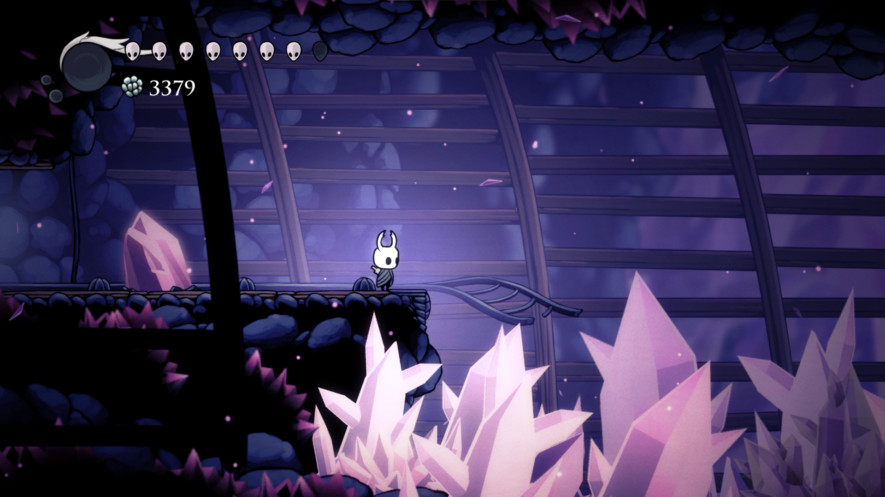
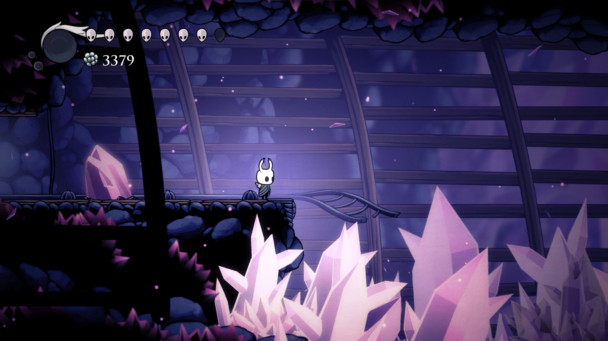

Dirtmouth
A primeira área do jogo, onde a muito tempo atrás, era uma passagem para novos visitantes do reino, agora, esse lugar permanece silencioso e abandonado, com poucos insetos habitando o lugar, e aqueles que habitam, esão cheios de medos e inseguranças sobre o futuro.
Encruzilhada Esquecida
A segunda parte do reino que era pra ser um caminho até o território principal do Rei Pálido, agora com diversas estruturas subterranêas e maquinários de transporte, indicando a importância e constante manutenção daquela passagem para todos no reino, já que era o principal meio de ligar o mundo externo ao reino de Hallownest.
Caminho Verde
Um local governado por outra divindade, uma divindade que funcionava como a natureza para aquele lugar. Os moradores desse local ficaram conhecidos como filhos do musgo, que nasceram dos sonhos desse ser superior.

Ermos Fúngicos
Aqui viviam apenas fungos, que viviam em constante guerra contra as criaturas de Ninhos Profundos, mesmo que eles quisessem apenas se procriar, algum tempo depois, uma tribo de louva-deuses se juntou ao lugar, protegendo a área das criatuas de Ninho Profundo e governando com base na força, um pequeno território no local.
Cidade das Lágrimas

A principal cidade que o Rei Pálido ficava antigamente, sendo a cidade que mais progrediu com o passar dos anos e o local de maior desejo entre os insetos daquela área. Ela foi dividida em duas partes, uma para a burguesia local e a outra para insetos mais humildes.

Terra do Descanso
As mariposas, após trairem sua progenitora e se juntarem ao Rei Pálido ficaram habitando aqui, sendo as criaturas mais misteriosas do reino, tendo diversas visões do futuro catastrófico que estava por vir e cuidado da alma daqueles que já partiram.
Penhascos Uivantes

O ponto inicial para se chegar a Hallownest, uma área quase que deserta e envolda de mistérios, um deles sendo a extinção da espécia de Besouros Transportadores do local, onde apenas um deles sobreviveu a tudo, enquanto o resto morreu de formas mistériosas, podendo ser pela radiância ou algo mais.


Hidrovias Reais

O esgoto da Cidade das Lágrimas, aqui um ácido toma conta de boa parte do local, assim como vermes e criaturas estranhas, também é o local onde um dos 5 cavaleiros reais habitou depois da queda do reino, deffendendo o local com sua vida a todo custo.

Pico de Cristais
Belo e deslumbrante com seus minérios rosados por toda parte, foi alvo da ganância da burguesia de querer consumir mais, mas acabou descarrilhando uma sequência de eventos que causaram a ruina do reino, já que, no topo dessa área, uma grande estátua da Radiância foi vista, o que foi a causa do ínicio da infecção.
 

Ninho Profundo

Criaturas como aranhas e outros seres assustadores rastejam por essas áreas, sendo os mais agressivos de todo o reino, eles atacam e devoram o que quer que se mova no local, também era o lugar de guerreiras habilidosas como as tecelãs e uma criatura mistériosa até os dias atuas, o Criador de Máscaras.


A Colmeia

Depois que o rei já estava dominando boa parte do reino, uma colmeia de abelhas decidiu se mudar para o local, em busca de uma vida melhor e mais comida para sobreviver, elas apenas ficaram tranquilas no seu canto, e se juntaram ao rei sem resistência, pois não viam problema nisso.


Borda do Reino

O local onde o Rei Pálido, antes de se tornar quem é, faleceu como um Wyrn e se tornou uma base para o território, agora, a área é coberta por corpos que caem de um coliseu, que fica em uma das bocas do Wyrn, além de uma chave para um local que deveria ter sido esquecido, uma chave conhecida como Marca do Rei.

Cânion da Névoa

Monomon vivia nessas terras fazendo seus expêrimentos em seu laborátorio, junto de seu assistênte. Um dos testes dela foi ver o que aconteceria se ela reproduzisse uma espécia de água-viva em alta quantidade, e bom, as coisas saíram do controle e agora, o local é infestado de criatuas gelatinosas e explosivas que não apresentam vontade.

Jardim da Rainha

Um local antes que era de retiro da rainha de Hallownest, a Dama Branca vinha constantemente para cá descansar e relaxar um pouco, mas agora, tudo foi tomado por criaturas hostís e vegetações ameaçadoras, se tornando impossível de viver por aqui, além de conter o Lorde dos Traidores, que foi um dos responsáveis por causar a destruição do reino.
Bacia Antiga
Um local em que o rei, após provar o amargo gosto da derrota, se isolou de todos em seu palácio, ficando apenas ele e sua amada Dama Branca. Aqui foi construido seu palácio e seus mais fieis servos andavam por esse lugar, agora, esquecido. Esse lugar guarda em seu estomgado, o segredo mais obscuro de todo o reino.
Palácio Branco

Depois de uma grande humilhação e de concluir que não conseguiria tomar controle do reino todo, o rei decidiu se isolar em um palácio separado de seus súditos, se retirando da Cidade das Lágrimas com a Dama Branca e começando a viver aqui.

O Vazio
Abaixo da Bacia Antiga, um local onde existiam os seres mais antigos que se tem conhecimento, aqueles que seguiam o Deus do Vazio, sacrificando sua alma para servi-lo, agora, apenas um mar de carcaças largadas pelo rei, na tentativa de criar um receptáculo vazio.

Casa dos Deuses
Apenas os mais fortes entrarão aqui e vencerão todos os panteões, aqui todos os Deuses de Hallownest descansam e aceitam o dasafio de pessoas de fora, um local para se provar ser um mero inseto ou algo que vai além, algo divino.